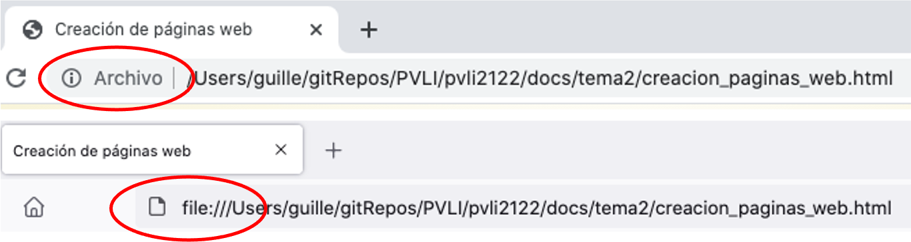
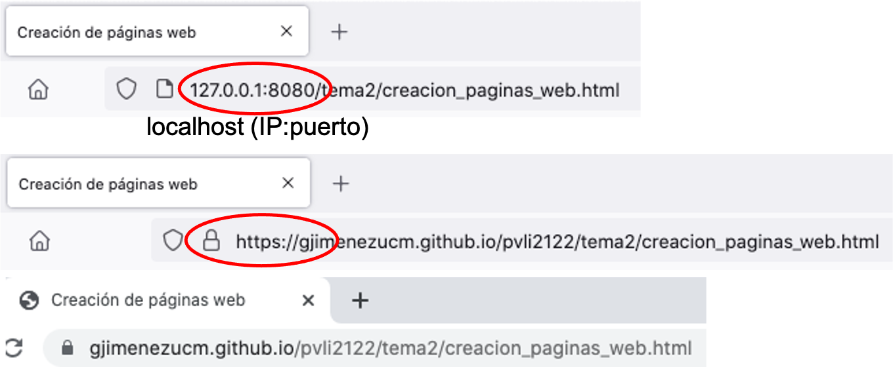
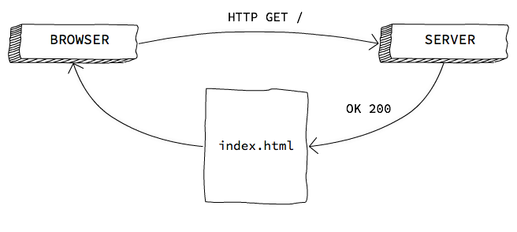
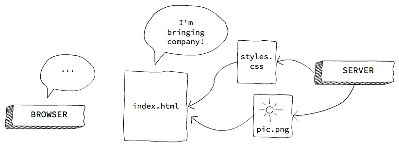

Si queréis publicar juegos en la web, necesitáis saber cómo funciona un navegador, y cómo funciona la web
El navegador entiende HTML, CSS y JS, es decir, es como un visor de PDF
Se pueden crear y abrir en local documentos HTML

Figura 1: Chrome y Firefox, al abrir un documento local
Además de mostrar documentos web y ejecutar JS, es capaz de que le pidamos HTMLs, JSs y CSSs que están en Internet
Se conecta con otro ordenador, le pide archivos, se los descarga, y los muestra
De hecho, se los puede descargar a un directorio local

Figura 2: Chrome y Firefox, al conectarse a un servidor
Y nada más. Internet es una red más, en la que muchos ordenadores de todo el mundo están conectados
Internet en la gran conexión mundial de ordenadores
La web es el conjunto de páginas
VoIP, servicios de streaming, juegos online… Todo eso también es Internet, pero no es la web
Un servidor es sólo un ordenador conectado a la red que tiene un programa que escucha y da algún servicio
También se llama servidor al programa que da dicho servicio en la red
No tienen necesariamente un hardware especial
Es decir, un lenguaje común que ambos extremos conocen
La información (archivos, vídeos…) se distribuye usando protocolos
Más conocido como HTTP
Es el protocolo que se usa en la web
Muy simple, sin estado:
Es sólo un programa:
Por extensión, llamamos servidor tanto a la máquina como al programa
Como un servidor web es sólo un programa, puedo ejecutarlo en mi ordenador y conectarme a él en local
Porque TCP (el "sistema" que usa Internet) permite conectarme a mi propia máquina con la dirección local:
localhost127.0.0.1(En realidad es más complejo que esto)

Figura 3: Petición HTTP GET
Se hace un HTTP GET a una URL, y si el recurso existe (y no está cacheado), el servidor lo retorna

Figura 4: Descarga de archivos
Los archivos HTML pueden hacer referencia a otros recursos… que el navegador deberá pedir al servidor
Mientras tanto, se va renderizando el HTML descargado
Cuando todas las imágenes, scripts, CSS, etc. se han cargado, se dispara el evento load de window (lo veremos más tarde)
<h1>Esto es un título</h1>
Es decir, no se puede programar sólo con HTML
Una página HTML es un archivo de texto plano que contiene la descripción de un documento
<!DOCTYPE html> <!-- establece el tipo de HTML -->
<html lang="es"> <!-- abre la página -->
<head> <!-- `head` son los datos del documento -->
<meta charset="UTF-8">
<title>Título</title>
</head>
<body> <!-- cuerpo del documento, lo que se ve -->
Contenido
</body>
</html> <!-- cierra la página -->
Las etiquetas se definen entre ángulos: <etiqueta>
(Casi) todas las etiquetas se abren y cierran, y afectan al contenido encerrado:
<strong>texto con fuerza</strong>
Se pueden anidar:
<strong>texto con fuerza y <em>énfasis</em>, hay de todo</strong>
Se encierran en <!-- ... -->
HTML permite establecer las propiedades de apariencia de los elementos
<h1 style="color: red;">Título en color rojo</h1>
...
<h1 style="color: red;">Otro título en color rojo</h1>
Pero esto significaba tener que cambiar los colores a todos los botones, párrafos, títulos…
Era difícil mantener una estética correcta
CSS se creó para establecer la apariencia de los elementos de forma unificada, en un sólo conjunto de archivos
Una hoja de estilos es un archivo de texto que contiene, para cada tipo de elemento, la apariencia apropiada
h1 {
color: red;
}
Sirve para dotar de lógica a un documento
Un archivo HTML es un documento, no un programa (como un PDF o un archivo de Word)
En un momento concreto de la historia de los navegadores, se incluyó la posibilidad de crear lógica con JavaScript
console.log("Hello, world!");
<!doctype html>
<html>
<!-- el head es metadata -->
<head>
<title>Cancamusa</title>
<meta charset="utf-8">
</head>
<!-- el body es contenido -->
<body>
<h1>Monkey Island</h1>
<p>Mira detrás de ti, ¡un mono de tres cabezas!</p>
</body>
</html>
<head> como en el <body><head> se iniciará la carga antes que el resto de recursos… pero bloqueará el renderizado mientras se ejecuta<body> permitirá que se renderice la web… pero tardará más en ejecutarseEsto es una simplificación, info más completa en este artículo de Jake Archibald
Podemos incluir código JavaScript inline en el HTML con la etiqueta <script>
<script>
console.log("Hello, world!");
</script>
Podemos incluir archivos JavaScript con la etiqueta <script> también:
<script src="js/game.js"></script>
Cuando todas las imágenes, scripts, CSS, etc. se han cargado, se dispara el evento load de window
Es muy común incluir el código que inicializa la ejecución del programa en el handler de ese evento
window.onload = function () {
// hello world
};
// Handler o función que se ejecutará
// en respuesta a un evento
button.onclick = function (evt) {
console.log("Click");
}
// ..
// Disparo el evento (similar a que el usuario
// hubiese pulsado el botón)
button.click();
// el botón no se desactiva hasta que el handler de "click"
// haya acabado de ejecutarse
button.disabled = true;